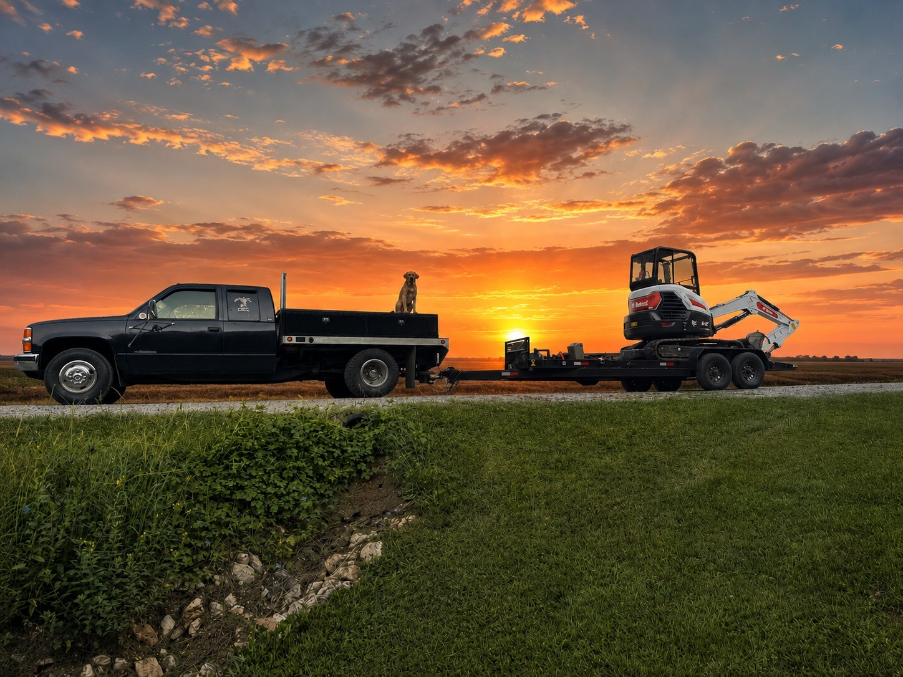

Mini Excavation
Drainage corrections, light trenching, culvert prep, stump-area cleanup, and other compact dirt work for properties that need practical results.

Mini excavation • Brush clearing • Driveway grading
Lil Yellow Dog Diggin helps property owners across south-central and eastern Illinois improve access, clean up overgrowth, and handle small to mid-size land projects with compact equipment and practical planning.
From pond edges and fence lines to driveways and rough ground, the goal is simple: leave the property cleaner, easier to use, and easier to maintain.
Built for acreage, trails, drives, and fence lines
From reclaiming overgrown areas to smoothing out a washed driveway, every job is focused on useful improvements that make rural property easier to access, maintain, and enjoy. Work runs across seven Illinois counties — Clay, Richland, Effingham, Jasper, Crawford, Coles, and Fayette.
Drainage corrections, light trenching, culvert prep, stump-area cleanup, and other compact dirt work for properties that need practical results.
Fence rows, field edges, trails, and overgrown areas cleared back into manageable, maintainable space.
Leveling, gravel shaping, rut repair, and drainage improvements that help rural driveways hold up better over time.
Flexible scheduling, promises kept
Weekends, evenings, whatever fits your life and your property. And if we tell you we'll be there, we'll be there. Keeping our word is the whole point.
Got a weekday job that can't wait? We're glad to work Saturdays and Sundays to get it done.
If after-hours is the only good time, that works for us. We stay flexible and work around you.
If we say we'll show up, we show up. Around here, your word and a handshake still mean something.

See the work
The gallery highlights completed work, before-and-after results, and site photos that show the kind of projects Lil Yellow Dog Diggin takes on.
See the evidencePart of the same brand family
Big Yellow Dog Truckin is the over-the-road trucking side of the same YellowDog.lol family — the same straightforward approach, the same standards, and the same yellow dog along for the ride.
Need a property cleanup quote?